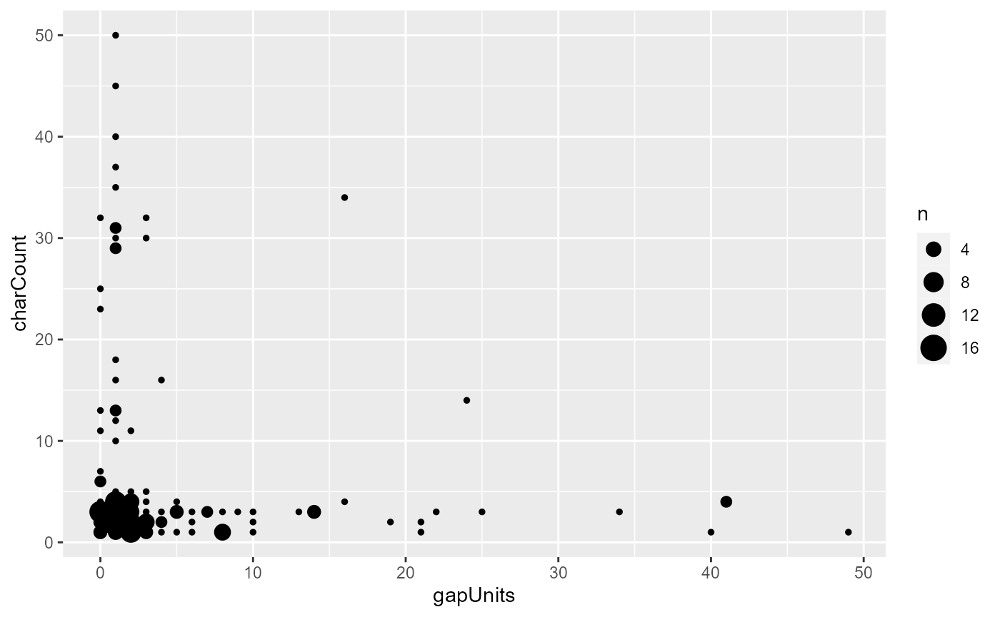
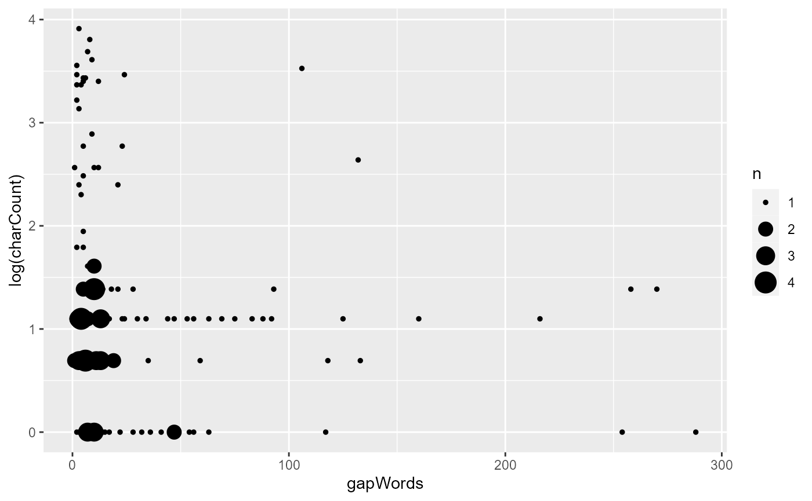
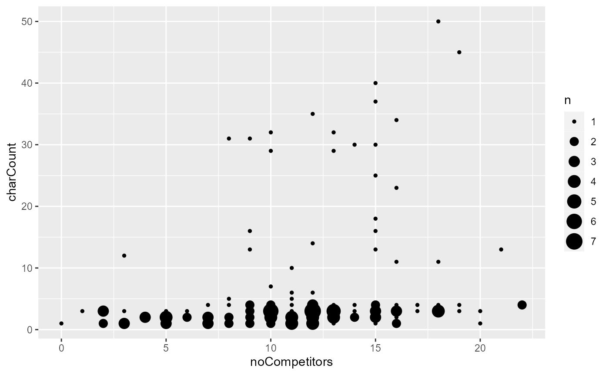
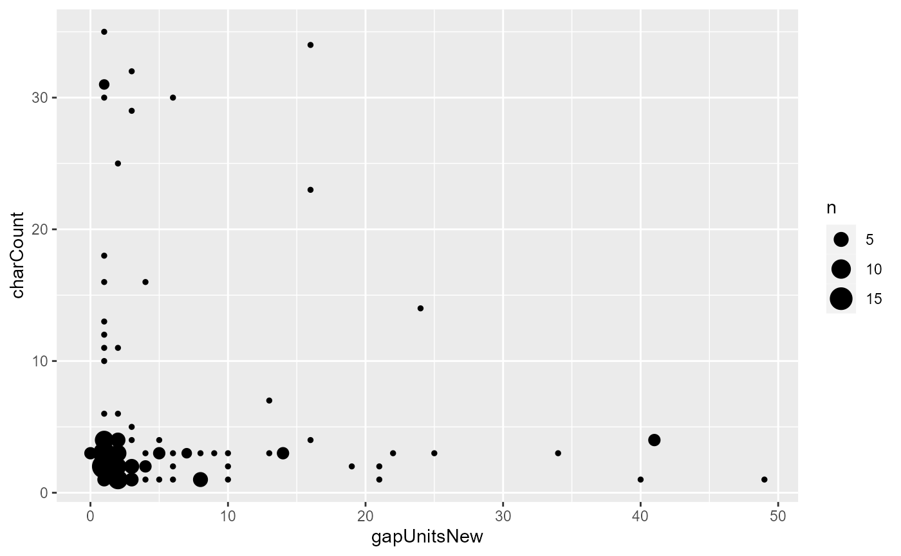
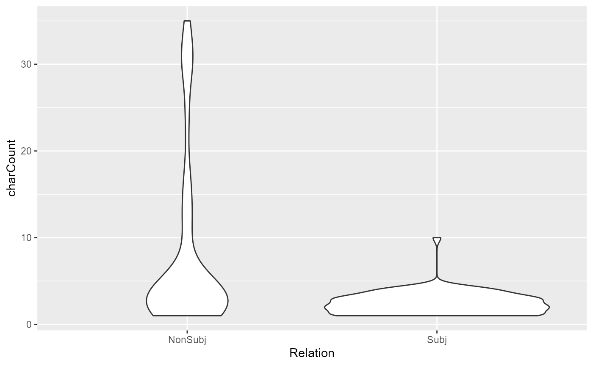
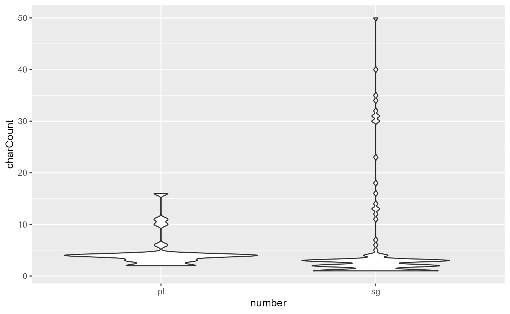

Toy example of a coreference analysis in rezonateR
sample_proj.Rmd
install.packages("devtools")
library(devtools)
install_github("rezonators/rezonateR")The aim of this article is to demonstrate, using a sample, highly
simplified project, what type of analysis may be conducted using
Rezonator and rezonateR. This particular example will
examine the choice of referential forms in spoken dialogue: What factors
lead to the choice of a longer form (e.g. the three black cats)
versus a shorter one (e.g. them)?
The data here is the same as that used in the series of tutorials
starting with vignette("import_save_basics"), but this
article will have less focus on how to write the code, and more on
showing you how to answer the sample research question using
rezonateR.
This article does not assume that you have read any of the other
articles on rezonateR. So there is some overlap in the
topics covered. I will point you to other tutorials for further details
when necessary.
You are welcome to follow this tutorial in R. If you are reading this
in R using the file sample_proj.Rmd, you can simply click
on the ‘run’ button (green ‘play’ icon on the top right of each box). As
long as all the code blocks are run sequentially, the code should work;
otherwise, open a ticket on GitHub!
The research question
It is often noted that in language, if a referent is more ‘accessible’, or more easily accessed mentally - for example, it is salient in the previous discourse or physical context - then we will tend to refer to it using a shorter and simpler form form. Things that are less accessible - for example, things that are mentioned for the first time - tend to be referred to using longer forms. Thus, we should expect that in natural discourse, factors that render a referent more accessible are associated with shorter forms, and factors that make it less accessible are associated with longer forms.
But what makes something more accessible, and therefore more likely to be referred to using a shorter form? The best way to investigate this question is to propose some factors that may increase accessibility, and then determine whether they are associated with the use of a shorter form in natural discourse. This project is a preliminary investgation of this issue using a snippet of conversation.
The input data from Rezonator
The data used in this example is from the text A Tree’s Life, a conversation between two sisters from the Santa Barbara Corpus of Spoken American English. The first 162 lines have been annotated here, which deals with the topic of one of the sisters’ roommates.
The file has been annotated for coreference (trails), resonance, as well as argument structure (through trees). For this tutorial, resonance will be ignored. Coreference chains include referential expressions along with non-referring expressions that have been otherwise referred back to (e.g. discourse deixis). Figure 1 shows an example of the data in the Rezonator interface:
Figure 1
Wavy lines indicate coreference links. Each mention or referential expression is a track inside the larger trail. These expressions all form tracks that are part of the trail for Mary:

Figure 2
In this file, entire clauses that serve as antecedents in cases of discourse deixis are also considered tracks. For example, notice that the two occurrences of I on Line 2 are linked together with a purple link, along with the zero on line 3.
Two-layered trees indicate argument structure of each verb. The verbal complex (including auxiliaries and adverbs that intervene between the auxiliary and verb, but not arguments that intervene between auxiliary and verb) is annotated as blank chunks (with chunkType = “verb”) and serves as the root of each tree. Tree links are annotated as Relation = “Subject” when it indicates a subject-verb relation; otherwise Relation is left blank. For example, the tree panel of Figure 3 shows the argument structure of Line 4, with defeats as the root with three children: a zero subject, the object the purpose of getting up in the morning, and the adverb kinda:

Figure 3
There are two types of chunks (elements represented by rectangles) in
this file: Chunks that have been created as part of a trail (mostly
referential expressions - such as the purpose of getting up in the
morning the example), and verbs, which are ‘blank chunks’, i.e. do
not belong to any trail and appear with grey borders (such as
said in the example). Chunks have been annotated for two
properties: chunkType (which is verb for verbs
and left blank for referential expressions) and
largerChunk, i.e. the larger chunk to which a chunk
belongs. Note that number is NOT annotated; it will instead
be annotated with the help of rezonateR.

Figure 4
Our goal in rezonateR
As we said above, our goal is to determine whether several factors that are proposed to be relevant to accessibility are associated with shorter referential forms.
To this end, we will be buildiong a model that predicts the
charCount, i.e. length (in number of characters) of a
certain referential expression. Several predictors will be used to
predict charCount in our small dataset. Here is a spoiler
of the final set of factors:
-
noPrevSubjMentionsIn10: The number of coreferent subject mentions within the 10 previous intonation units. That is, how many times was the referent of a form mentioned in the 10 previous intonation units in subject position? -
noPrevNonSubjMentionsIn10: The number of coreferent non-subject mentions within the 10 previous units. That is, how many times was the referent of a form mentioned in the 10 previous intonation units, outside of subject position? -
gapUnits: How many units are there between the previous mention and the current one? -
noCompetitors: The number of competitors within the five previous units. That is, how many times were entities other than the referent of the current referential expression mentioned within the five previous intonation units? -
Relation: Is the current referential expression a subject? -
isPredOrFree: Is the current mention either a nominal predicate (copula complement) or not tied to a particular clause? -
number: Is the current referential expression singular or plural?
Thus, our goal within R is to create a data frame where each row
corresponds to a referential expresssion, and the columns include all of
these factors (plus charCount, the number of characters).
This can be done easily using the rezonateR functions after
inputting the raw Rezonator data.
Importing the file
The first step is to import the file. When importing a file, an
object called rezrObj is created. rezrObj
contains two kinds of elements:
- A
nodeMap, which contains the data in the form of a series of interconnected nodes with attributes - A series of
rezrDFs, which are data frames containing information about different elements of the file.
Some important rezrDFs include: tokenDF,
which contains the information about individual tokens of the original
file, chunkDF, which contains information about chunks,
trackDF, which contains information about entries of trails
(i.e. mentions in coreference chains), and treeEntryDF,
which contains information about entries on a tree.
Here’s the import code. It contains two kinds of information:
- How to divide the chunks into layers. Here, we divide the chunks
into two layers,
verbandrefexpr(for ‘referential expressions’, including the entire clauses we’ve seen before). Chunks in the two layers are put into two separaterezrDFs. Since no layers are specified fortrackDFandtreeDF, there will be only onerezrDFfor them, with the layer namedefault. - Which fields of a token contains text to be concatenated in
concatFields. The fieldstextandtranscriptof the Santa Barbara Corpus are concatenated to formtextandtranscriptfields of larger structures like units and chunks. Telling this information torezonateRis important for the text to appear in tables likechunkDForunitDF.
library(rezonateR)
#> Loading required package: readr
#> Loading required package: stringr
#> Loading required package: rlang
path = system.file("extdata", "sbc007.rez", package = "rezonateR", mustWork = T)
layerRegex = list(chunk = list(field = "chunkType",
regex = c("verb"),
names = c("verb", "refexpr")))
concatFields = c("text", "transcript")
rez007 = importRez(path,
layerRegex = layerRegex,
concatFields = concatFields)
#> Import starting - please be patient ...
#> Creating node maps ...
#> Creating rezrDFs ...
#> Adding foreign fields to rezrDFs and sorting (this is the slowest step) ...
#> >Adding to unit entry DF ...
#> >Adding to unit DF ...
#> >Adding to chunk DF ...
#> >Adding to track DFs ...
#> >Adding to track DFs ...
#> >Adding to tree DFs ...
#> Splitting rezrDFs into layers ...
#> A few finishing touches ...
#> Done!As examples of the content inside the imported object, here are the
imported chunkDF members and trackDF:
head(rez007$chunkDF)
#> $refexpr
#> # A tibble: 64 × 23
#> id doc name nest kind place text trans…¹ endNote order negPl…²
#> * <chr> <chr> <chr> <dbl> <chr> <chr> <chr> <chr> <chr> <chr> <chr>
#> 1 35E3E0AB68… sbc0… Chun… 2 "" "" Stay… Stay u… "" "" ""
#> 2 1F6B5F0B3F… sbc0… Chun… 3 "" "" the … the pu… "" "" ""
#> 3 24FE2B219B… sbc0… Chun… 2 "" "" gett… gettin… "" "" ""
#> 4 158B579C1B… sbc0… Chun… 1 "" "" the … the mo… "" "" ""
#> 5 2B6521E881… sbc0… Chun… 1 "" "" all … all th… "" "" ""
#> 6 5B854594DD… sbc0… Chun… 2 "" "" the … the wa… "" "" ""
#> 7 189552EBB1… sbc0… Chun… 2 "" "" the … the on… "" "" ""
#> 8 313D141E6D… sbc0… Chun… 1 "" "" the … the ho… "" "" ""
#> 9 1E970FF5D9… sbc0… Chun… 1 "" "" all … all th… "" "" ""
#> 10 85C4F230E6… sbc0… Chun… 2 "" "" what… what t… "" "" ""
#> # … with 54 more rows, 12 more variables: corpusSeq <chr>, pSentOrder <chr>,
#> # POS_dft <chr>, tokenSeq <chr>, chunkType <chr>, turnOrder <chr>,
#> # largerChunk <chr>, tokenOrderFirst <dbl>, docTokenSeqFirst <dbl>,
#> # tokenOrderLast <dbl>, docTokenSeqLast <dbl>, layer <chr>, and abbreviated
#> # variable names ¹transcript, ²negPlace
#> # ℹ Use `print(n = ...)` to see more rows, and `colnames()` to see all variable names
#>
#> $verb
#> # A tibble: 132 × 23
#> id doc name nest kind place text trans…¹ endNote order negPl…²
#> * <chr> <chr> <chr> <dbl> <chr> <chr> <chr> <chr> <chr> <chr> <chr>
#> 1 210FB26A31… sbc0… Chun… 1 "" "" said said "" "" ""
#> 2 744AD104FE… sbc0… Chun… 1 "" "" was … was n'… "" "" ""
#> 3 15B9BB5D50… sbc0… Chun… 1 "" "" Stay Stay "" "" ""
#> 4 1A14BB68ED… sbc0… Chun… 1 "" "" defe… defeats "" "" ""
#> 5 2CCD5F5A95… sbc0… Chun… 1 "" "" know know "" "" ""
#> 6 1F1135429F… sbc0… Chun… 1 "" "" 's 's "" "" ""
#> 7 2F857247FD… sbc0… Chun… 1 "" "" a ha… a hard… "" "" ""
#> 8 30F18BABDB… sbc0… Chun… 1 "" "" do n… do n't] "" "" ""
#> 9 94188DEA38… sbc0… Chun… 1 "" "" is i:s] "" "" ""
#> 10 13A37EC506… sbc0… Chun… 1 "" "" do n… do n't… "" "" ""
#> # … with 122 more rows, 12 more variables: corpusSeq <chr>, pSentOrder <chr>,
#> # POS_dft <chr>, tokenSeq <chr>, chunkType <chr>, turnOrder <chr>,
#> # largerChunk <chr>, tokenOrderFirst <dbl>, docTokenSeqFirst <dbl>,
#> # tokenOrderLast <dbl>, docTokenSeqLast <dbl>, layer <chr>, and abbreviated
#> # variable names ¹transcript, ²negPlace
#> # ℹ Use `print(n = ...)` to see more rows, and `colnames()` to see all variable names
head(rez007$trackDF$default)
#> # A tibble: 6 × 31
#> id doc chain sourc…¹ token gapWo…² charC…³ token…⁴ gapUn…⁵ kind place
#> <chr> <chr> <chr> <chr> <chr> <chr> <dbl> <dbl> <chr> <chr> <chr>
#> 1 1096E4A… sbc0… 278D… "" 37EF… N/A 1 1 N/A "Wor… "1"
#> 2 92F20AC… sbc0… 278D… "174E6… 9363… 2 1 1 0 "Wor… "3"
#> 3 7E5BB65… sbc0… 2B67… "" 744A… N/A 17 5 N/A "" ""
#> 4 1F74D2B… sbc0… 2A01… "52452… 1265… N/A 4 1 N/A "Wor… "9"
#> 5 2485C4F… sbc0… 278D… "CB1D9… 2113… 10 3 1 1 "" ""
#> 6 1BF2260… sbc0… 2A01… "" 35E3… 5 12 3 1 "" ""
#> # … with 20 more variables: text <chr>, transcript <chr>, endNote <chr>,
#> # order <chr>, negPlace <chr>, corpusSeq <chr>, pSentOrder <chr>,
#> # POS_dft <chr>, tokenSeq <chr>, chunkType <chr>, turnOrder <chr>,
#> # largerChunk <chr>, tokenOrderFirst <dbl>, tokenOrderLast <dbl>,
#> # docTokenSeqFirst <dbl>, docTokenSeqLast <dbl>, chainCreateSeq <dbl>,
#> # name <chr>, chainSize <dbl>, layer <chr>, and abbreviated variable names
#> # ¹sourceLink, ²gapWords, ³charCount, ⁴tokenCount, ⁵gapUnits
#> # ℹ Use `colnames()` to see all variable namesMore information about the import process and the various objects
created can be found in vignette("import_save_basics").
Each line of the table rez007$trackDF$default contains a
referential expression whose size we want to predict. The goal of using
rezonateR for this project will be to produce a version of
the data frame rez007$trackDF that contains all the
predictors and the dependent variable on each line, and may be fed to
models such as lm().
You can save the rezrObj with rez_save() so
that it can be opened with rez_load() next time, saving you
the trouble of importing again:
savePath = "rez007.Rdata"
rez_save(rez007, savePath)
#> Saving rezrObj ...Augmenting the file with basic information about order and sequence
After importing the file, there are a few simple operations that we usually call to add additional information to the table which was not added during the original import process, before beginning the process of editing.
Words vs tokens
By default Rezonator provides two fields related to the position of a
token, which you will see in tokenDF as columns:
-
docTokenSeq- refers to the order of a token within the entire text -
tokenOrder- refers to the position of a token within its intonation unit
Structures that span multiple tokens, like chunks and units, have four token sequence-related fields:
-
docTokenSeqFirst- refers to thedocTokenSeqof the first token. -
docTokenSeqLast- refers to thedocTokenSeqof the last token. -
tokenOrderFirst- refers to thetokenOrderof the first token. -
tokenOrderLast- refers to thetokenOrderof the last token.
Here are some examples:
head(rez007$tokenDF %>% select(id, text, tokenOrder, docTokenSeq))
#> # A tibble: 6 × 4
#> id text tokenOrder docTokenSeq
#> <chr> <chr> <dbl> <dbl>
#> 1 31F282855E95E (...) 1 1
#> 2 363C1D373B2F7 God 2 2
#> 3 3628E4BD4CC05 , 3 3
#> 4 37EFCBECFD691 I 1 4
#> 5 12D67756890C1 said 2 5
#> 6 936363B71D59 I 3 6
head(rez007$chunkDF$refexpr %>% select(id, text, tokenOrderFirst, tokenOrderLast, docTokenSeqFirst, docTokenSeqLast))
#> # A tibble: 6 × 6
#> id text token…¹ token…² docTo…³ docTo…⁴
#> <chr> <chr> <dbl> <dbl> <dbl> <dbl>
#> 1 35E3E0AB6803A Stay up late 3 5 17 19
#> 2 1F6B5F0B3FF59 the purpose of getting up in th… 5 12 25 32
#> 3 24FE2B219BD21 getting up in the morning 8 12 28 32
#> 4 158B579C1BA49 the morning 11 12 31 32
#> 5 2B6521E881365 all this other shit 2 5 144 147
#> 6 5B854594DD34 the way (...) they were feeling 5 10 156 161
#> # … with abbreviated variable names ¹tokenOrderFirst, ²tokenOrderLast,
#> # ³docTokenSeqFirst, ⁴docTokenSeqLastThese values count all tokens in the file. In the Santa Barbara
Corpus text we are using, this includes endnotes (such as ,
and .), transcriptions of vocalisms (such as
(H) for in-breaths and @@@ for laughter), and
so on. What if we want a version of fields like tokenOrder
and docTokenSeq that excludes these, including just ‘real’
words like person and love? We can use the function
addIsWordField():
rez007 = addIsWordField(rez007, kind == "Word")This adds the fields wordOrder and
docWordSeq to tokenDF (and also its
counterparts in places like chunkDF and
unitDF, e.g. wordOrderFirst,
wordOrderLast, docWordSeqFirst,
docWordSeqLast). These new fields discount non-real words,
which get the value 0. Here’s an example in
tokenDF:
head(rez007$tokenDF %>% select(id, tokenOrder, docTokenSeq, wordOrder, docWordSeq))
#> # A tibble: 6 × 5
#> id tokenOrder docTokenSeq wordOrder docWordSeq
#> <chr> <dbl> <dbl> <dbl> <dbl>
#> 1 31F282855E95E 1 1 0 0
#> 2 363C1D373B2F7 2 2 1 1
#> 3 3628E4BD4CC05 3 3 0 0
#> 4 37EFCBECFD691 1 4 1 2
#> 5 12D67756890C1 2 5 2 3
#> 6 936363B71D59 3 6 3 4Unit sequence information
Information about the location of elements other than tokens inside
units is not included by default. The function addUnitSeq()
does this. Here, unitSeqFirst and unitSeqLast
are added to chunkDF and trackDF, allowing us
to see which units chunks and tracks belong to:
rez007 = addUnitSeq(rez007, "track")
head(rez007$chunkDF$refexpr %>% select(id, text, unitSeqFirst, unitSeqLast))
#> # A tibble: 6 × 4
#> id text unitSeqFirst unitSeqL…¹
#> <chr> <chr> <dbl> <dbl>
#> 1 35E3E0AB6803A Stay up late 3 3
#> 2 1F6B5F0B3FF59 the purpose of getting up in the morning 4 4
#> 3 24FE2B219BD21 getting up in the morning 4 4
#> 4 158B579C1BA49 the morning 4 4
#> 5 2B6521E881365 all this other shit 24 24
#> 6 5B854594DD34 the way (...) they were feeling 26 26
#> # … with abbreviated variable name ¹unitSeqLastFor the details of these functions, see
vignette("time_seq").
Pass 1: Predicting length from lookback distance
gapUnits: Lookback distance in R
As you may have noticed when using Rezonator, Rezonator automatically
calculates the number of distances from each track (mention) to the
previous mention in the same trail (coreference chain). This is called
gapUnits, and it is automatically imported from Rezonator
into rezonateR in trackDF. The gapUnits value
is N/A for first mentions of things; otherwise it is a
nonnegative integer.
Because first mentions are usually not accessible in discourse when
they are first introduced, we can expect that they would be referred to
using heavier noun phrases. Let’s try to verify that this is the case.
(This tutorial will use some Tidyverse functions, such as those from
ggplot2; feel free to click on any functions that you do
not recognise to see their documentation).
library(ggplot2)
#>
#> Attaching package: 'ggplot2'
#> The following object is masked from 'package:rezonateR':
#>
#> %+%
rez007$trackDF$default %>%
mutate(isFirst = case_when(gapUnits == "N/A" ~ "First",
T ~ "NonFirst")) %>%
ggplot(aes(x = isFirst, y = charCount)) + geom_violin()
Clearly, we can see that first mentions have a much higher tendency to be referred to using a noun phrase that has more characters.
Among the non-first mentions, can we also predict whether the
character count from gapUnits? Let’s again do a quick
visualisation. If we exclude non-first mentions, and plot the
relationship betwee gapUnits and charCount,
this is what we get:
rez007$trackDF$default %>%
filter(gapUnits != "N/A", charCount > 0) %>%
mutate(gapUnits = as.integer(gapUnits)) %>%
ggplot(aes(x = gapUnits, y = charCount)) + geom_count()Oh no, what’s going on? It seems that gapUnits is not
predicting what we would usually expect to see. Most of the long
gapUnits noun phrases are fairly light, and there are quite
a few small gapUnits phrases that are quite long.
In the rest of the tutorial, we will partially account for this
weirdness (though some of it is certainly due to our small, biased
dataset). But for now, let’s try to apply a simple linear model to this
data to see what happens when we try to predict charCount
from gapUnits. (Note: This is not the best model for the
model specification we’re looking at, but let’s keep it simple for this
tutorial.)
pass1_model1 = rez007$trackDF$default %>%
filter(gapUnits != "N/A", charCount > 0) %>%
mutate(gapUnits = as.integer(gapUnits)) %>%
lm(charCount ~ gapUnits, .)
summary(pass1_model1)
#>
#> Call:
#> lm(formula = charCount ~ gapUnits, data = .)
#>
#> Residuals:
#> Min 1Q Median 3Q Max
#> -5.656 -4.534 -3.534 -1.952 43.466
#>
#> Coefficients:
#> Estimate Std. Error t value Pr(>|t|)
#> (Intercept) 6.65576 0.85118 7.819 6.4e-13 ***
#> gapUnits -0.12170 0.09148 -1.330 0.185
#> ---
#> Signif. codes: 0 '***' 0.001 '**' 0.01 '*' 0.05 '.' 0.1 ' ' 1
#>
#> Residual standard error: 9.517 on 162 degrees of freedom
#> Multiple R-squared: 0.01081, Adjusted R-squared: 0.0047
#> F-statistic: 1.77 on 1 and 162 DF, p-value: 0.1853As we can see, although there is a negative coefficient that says a
larger gapUnits leads to a smaller character count (as
expected), it is not significant.
A finer-grained distance metric?
There is another value, gapWords, that is automatically
calculated in Rezonator and calculates the number of tokens from the
current mention to the previous one. Would this finer-grained measure do
better than gapUnits? Let’s try:
rez007$trackDF$default %>%
filter(gapWords != "N/A", charCount > 0) %>%
mutate(gapWords = as.integer(gapWords)) %>%
ggplot(aes(x = gapWords, y = charCount)) + geom_count()
pass1_model2 = rez007$trackDF$default %>%
filter(gapWords != "N/A", charCount > 0) %>%
mutate(gapWords = as.integer(gapWords)) %>%
lm(charCount ~ gapWords, .)
summary(pass1_model2)
#>
#> Call:
#> lm(formula = charCount ~ gapWords, data = .)
#>
#> Residuals:
#> Min 1Q Median 3Q Max
#> -5.623 -4.544 -3.475 -1.999 43.397
#>
#> Coefficients:
#> Estimate Std. Error t value Pr(>|t|)
#> (Intercept) 6.66260 0.85391 7.802 7.06e-13 ***
#> gapWords -0.01974 0.01486 -1.329 0.186
#> ---
#> Signif. codes: 0 '***' 0.001 '**' 0.01 '*' 0.05 '.' 0.1 ' ' 1
#>
#> Residual standard error: 9.517 on 162 degrees of freedom
#> Multiple R-squared: 0.01079, Adjusted R-squared: 0.004679
#> F-statistic: 1.766 on 1 and 162 DF, p-value: 0.1857The pattern is not much clearer from the diagram this time than last time, and there is little change with the linear model either: The p-value is still around 0.2.
There are ways we can potentially improve on these measures as well as other predictors of character count that we can potentially explore. We’ll continue doing this throughout the tutorial.
Pass 2: Adding predictors with EasyTrack
Having attempted to predict character count from predictors imported
directly from Rezonator, let’s try to derive some predictors using
rezonateR functions. This section will cover some basic
functions in the EasyTrack series of functions. See
vignette("track") for details about them.
Counting previous mentions
The function countPrevMentions() in
rezonateR is one function we can use. In its simplest form,
you can simply specify a window of units in which to look for
referential expressions that corefer with the each mention. We will look
at the 10 previous units. We will add this value to the
trackDF using the rez_mutate() function, which
is part of the TidyRez family (vignette("edit_tidyRez")).
(We use this function rather than dplyr::mutate() in order
to ensure that the resulting data frame will remain in the correct
rezonateR format.) Here is the code, along with a line of
code that displays the first couple of values of this predictor:
rez007$trackDF$default = rez007$trackDF$default %>%
rez_mutate(noPrevMentionsIn10 = countPrevMentions(10))
rez007$trackDF$default %>% select(id, text, noPrevMentionsIn10) %>% slice(1:20)
#> # A tibble: 20 × 3
#> id text noPrevMentionsIn10
#> <chr> <chr> <int>
#> 1 1096E4AFFFE65 I 0
#> 2 92F20ACA5F06 I 0
#> 3 7E5BB65072C was n't gon na do 0
#> 4 1F74D2B049FA4 this 0
#> 5 2485C4F740FC0 <0> 2
#> 6 1BF2260B4AB78 Stay up late 1
#> 7 6B37B5A80F2A <0> 2
#> 8 259C2C2979B6C the purpose of getting up in the morning 0
#> 9 1D1F2B7054E32 getting up in the morning 0
#> 10 1FA3806680C84 the morning 0
#> 11 4B32FD84BA10 I 0
#> 12 3098AB24A0FA6 it 3
#> 13 2D5885FCA1E15 a hard habit to break 0
#> 14 1C311FD331AC4 I 1
#> 15 2E01153F693D3 It 4
#> 16 28CFE0272CE1C I 2
#> 17 24229602BDC4C I 3
#> 18 1A598AE39592B midnight 0
#> 19 38C628AB4DA4D What 0
#> 20 36B8918BB6E64 I 2Now let’s try to draw a scatterplot and fit a linear model plotting
this predictor against charCount, as we have done
before:
rez007$trackDF$default %>%
filter(gapWords != "N/A", charCount > 0) %>%
ggplot(aes(x = noPrevMentionsIn10, y = charCount)) + geom_count()
pass2_model1 = rez007$trackDF$default %>%
filter(gapWords != "N/A", charCount > 0) %>%
lm(charCount ~ noPrevMentionsIn10, .)
summary(pass2_model1)
#>
#> Call:
#> lm(formula = charCount ~ noPrevMentionsIn10, data = .)
#>
#> Residuals:
#> Min 1Q Median 3Q Max
#> -6.839 -4.592 -3.341 -1.094 45.157
#>
#> Coefficients:
#> Estimate Std. Error t value Pr(>|t|)
#> (Intercept) 7.8389 1.1146 7.033 5.38e-11 ***
#> noPrevMentionsIn10 -0.7489 0.3607 -2.076 0.0394 *
#> ---
#> Signif. codes: 0 '***' 0.001 '**' 0.01 '*' 0.05 '.' 0.1 ' ' 1
#>
#> Residual standard error: 9.444 on 162 degrees of freedom
#> Multiple R-squared: 0.02592, Adjusted R-squared: 0.01991
#> F-statistic: 4.311 on 1 and 162 DF, p-value: 0.03945From the graph, we see that there is a tendency for character counts to be smaller when the number of previous mentions is greater, albeit somewhat weak. The very large referential expressions are absent when there are more than 5 previous mentions, and after about five mentions, we can see the modal character length decreasing as well. From the linear model, We also find that the number of previous mentions in the previous 10 units is a significant predictor at the 0.05 significance level.
Counting competitors
The function countCompetitors() is similar to
countPreviousMentions(), except that it counts the number
of referential expressions that are not in the same coreference
chain, i.e. compete for the interlocutors’ attention. The syntax is
similar to countPreviousMentions(), with the extra argument
between, which specifies whether you want to count only
expressions between the current mention and the previous one. We will
add this value to the trackDF using the
rez_mutate() function again. So let’s try to add the number
of competitors now:
rez007$trackDF$default = rez007$trackDF$default %>%
rez_mutate(noCompetitors = countCompetitors(windowSize = 10, between = F))
rez007$trackDF$default %>% select(id, noCompetitors) %>% slice(1:20)
#> # A tibble: 20 × 2
#> id noCompetitors
#> <chr> <int>
#> 1 1096E4AFFFE65 0
#> 2 92F20ACA5F06 0
#> 3 7E5BB65072C 2
#> 4 1F74D2B049FA4 3
#> 5 2485C4F740FC0 2
#> 6 1BF2260B4AB78 2
#> 7 6B37B5A80F2A 1
#> 8 259C2C2979B6C 0
#> 9 1D1F2B7054E32 0
#> 10 1FA3806680C84 0
#> 11 4B32FD84BA10 3
#> 12 3098AB24A0FA6 4
#> 13 2D5885FCA1E15 1
#> 14 1C311FD331AC4 2
#> 15 2E01153F693D3 2
#> 16 28CFE0272CE1C 1
#> 17 24229602BDC4C 0
#> 18 1A598AE39592B 1
#> 19 38C628AB4DA4D 0
#> 20 36B8918BB6E64 1Now let’s try to draw a scatterplot and fit a linear model, as we have done before:
rez007$trackDF$default %>%
filter(gapWords != "N/A", charCount > 0) %>%
ggplot(aes(x = noCompetitors, y = charCount)) + geom_count()
pass2_model1 = rez007$trackDF$default %>%
filter(gapWords != "N/A", charCount > 0) %>%
lm(charCount ~ noCompetitors, .)
summary(pass2_model1)
#>
#> Call:
#> lm(formula = charCount ~ noCompetitors, data = .)
#>
#> Residuals:
#> Min 1Q Median 3Q Max
#> -9.349 -4.503 -2.887 -0.887 39.651
#>
#> Coefficients:
#> Estimate Std. Error t value Pr(>|t|)
#> (Intercept) 3.8873 1.1854 3.279 0.00127 **
#> noCompetitors 1.6155 0.6782 2.382 0.01838 *
#> ---
#> Signif. codes: 0 '***' 0.001 '**' 0.01 '*' 0.05 '.' 0.1 ' ' 1
#>
#> Residual standard error: 9.406 on 162 degrees of freedom
#> Multiple R-squared: 0.03384, Adjusted R-squared: 0.02787
#> F-statistic: 5.673 on 1 and 162 DF, p-value: 0.01838From the graph, there does seem to be a small effect where a greater number of competitors leads to the use of fewer characters. This effect again turns out to be significant at the 0.05 significance level.
However, there is good reason to believe that
noCompetitors and noPrevMentionsIn10 may be
highly correlated, and thus some of the effect we see for
noCompetitors may actually due to the presence of previous
mentions, or vice versa. This is because of there are more
non-coreferring expressions in the previous units, there will tend to be
fewer coreferring expressions, assuming that the number of referential
expressions is relatively stable, i.e. our two competitors are
negatively correlated are negatively correlated. The code below plots
them in a graph and calculates the Pearson correlation coefficient,
which is somewhat negative:
rez007$trackDF$default %>%
filter(gapWords != "N/A", charCount > 0) %>%
ggplot(aes(x = noCompetitors, y = noPrevMentionsIn10)) + geom_count()
cor(rez007$trackDF$default$noCompetitors, rez007$trackDF$default$noPrevMentionsIn10)
#> [1] -0.2175647So let’s try to put both in the model and how the results turn out:
pass2_model3 = rez007$trackDF$default %>%
filter(gapWords != "N/A", charCount > 0) %>%
lm(charCount ~ noCompetitors + noPrevMentionsIn10, .)
summary(pass2_model3)
#>
#> Call:
#> lm(formula = charCount ~ noCompetitors + noPrevMentionsIn10,
#> data = .)
#>
#> Residuals:
#> Min 1Q Median 3Q Max
#> -9.512 -4.538 -2.792 -0.424 41.274
#>
#> Coefficients:
#> Estimate Std. Error t value Pr(>|t|)
#> (Intercept) 5.5909 1.5766 3.546 0.000512 ***
#> noCompetitors 1.3792 0.6902 1.998 0.047390 *
#> noPrevMentionsIn10 -0.5953 0.3656 -1.628 0.105396
#> ---
#> Signif. codes: 0 '***' 0.001 '**' 0.01 '*' 0.05 '.' 0.1 ' ' 1
#>
#> Residual standard error: 9.358 on 161 degrees of freedom
#> Multiple R-squared: 0.04949, Adjusted R-squared: 0.03768
#> F-statistic: 4.191 on 2 and 161 DF, p-value: 0.01681As we can see, once we put both in the model,
noCompetitors becomes the only significant predictor. (Of
course, this does not mean that noPrevMentionsIn10 does not
matter; we only have very low power, after all.)
As a last attempt, let’s also try the lookback-based approach by
adding gapUnits to the model as well:
pass2_model4 = rez007$trackDF$default %>%
filter(gapWords != "N/A", charCount > 0) %>%
mutate(gapUnits = as.numeric(gapUnits)) %>%
lm(charCount ~ noCompetitors + noPrevMentionsIn10 + gapUnits, .)
summary(pass2_model4)
#>
#> Call:
#> lm(formula = charCount ~ noCompetitors + noPrevMentionsIn10 +
#> gapUnits, data = .)
#>
#> Residuals:
#> Min 1Q Median 3Q Max
#> -10.669 -4.782 -2.812 0.190 40.400
#>
#> Coefficients:
#> Estimate Std. Error t value Pr(>|t|)
#> (Intercept) 7.2225 1.6711 4.322 2.71e-05 ***
#> noCompetitors 1.5960 0.6833 2.336 0.0207 *
#> noPrevMentionsIn10 -0.9392 0.3827 -2.454 0.0152 *
#> gapUnits -0.2496 0.0959 -2.603 0.0101 *
#> ---
#> Signif. codes: 0 '***' 0.001 '**' 0.01 '*' 0.05 '.' 0.1 ' ' 1
#>
#> Residual standard error: 9.195 on 160 degrees of freedom
#> Multiple R-squared: 0.0881, Adjusted R-squared: 0.071
#> F-statistic: 5.152 on 3 and 160 DF, p-value: 0.001995Interestingly, this time, all three predictors turn out to
be significant. The first two are in expected directions: having more
competitors leads to longer referential expressions, whereas more recent
mentions makes the form smaller. However, the gapUnits
effect is in the opposite direction as we expect: The greater the gap,
the smaller the referential expression! This does not appear to make
sense. We will continue to improve this model in the following sections
to see what happens to gapUnits.
Upgrading gapWords
There’s an additional thing we could do. The gapWords in
Rezonator actually has a couple of problems; namely, it treats zeroes as
belonging to the position you put the <0> in (which
is arbitrary), and it counts non-words such as pauses, breaths or
laughter, which you might not want to count. Let’s try to use the
rezonateR function tokensToLastMention()
instead to deal with these issues. We can treat <0>
as belonging to the end of the intonation unit they are annotated at,
and define docWordSeqLast as the token sequence used in
calculation, thus discounting non-words:
rez007$trackDF$default = rez007$trackDF$default %>%
rez_mutate(gapWordsNew = tokensToLastMention(tokenOrder = docWordSeqLast,
unitDF = rez007$unitDF,
zeroProtocol = "unitFinal",
zeroCond = (text == "<0>")))Now we can put this new gapWords into the model:
pass2_model5 = rez007$trackDF$default %>%
filter(gapWords != "N/A", charCount > 0) %>%
mutate(gapUnits = as.numeric(gapUnits)) %>%
lm(charCount ~ noCompetitors + noPrevMentionsIn10 + gapWordsNew, .)
summary(pass2_model5)
#>
#> Call:
#> lm(formula = charCount ~ noCompetitors + noPrevMentionsIn10 +
#> gapWordsNew, data = .)
#>
#> Residuals:
#> Min 1Q Median 3Q Max
#> -9.957 -4.293 -2.640 -0.134 40.694
#>
#> Coefficients:
#> Estimate Std. Error t value Pr(>|t|)
#> (Intercept) 5.28530 1.66172 3.181 0.00178 **
#> noCompetitors 1.55544 0.69390 2.242 0.02641 *
#> noPrevMentionsIn10 -0.55027 0.37362 -1.473 0.14283
#> gapWordsNew -0.04628 0.04262 -1.086 0.27920
#> ---
#> Signif. codes: 0 '***' 0.001 '**' 0.01 '*' 0.05 '.' 0.1 ' ' 1
#>
#> Residual standard error: 9.225 on 155 degrees of freedom
#> (5 observations deleted due to missingness)
#> Multiple R-squared: 0.06179, Adjusted R-squared: 0.04364
#> F-statistic: 3.403 on 3 and 155 DF, p-value: 0.01927This has no significant effect, and indeed takes away the
significance of noPrevMentionsIn10 too.
Pass 3: Full analysis
Merging chunks
You have likely suspected by now that there is something wrong with
our gapUnits measure. And you would be correct! There
is a mistake in how we have been approaching these
calculations.
Let’s look at some cases where gapUnits is very small,
but charCount is mysteriously very large, and see what’s
wrong with them. We’ll set the cutoff for gapUnits at 1,
and the cutoff for charCount at 20.
rez007$trackDF$default %>% filter(gapUnits <= 1, charCount > 20)
#> # A tibble: 12 × 40
#> id doc chain sourc…¹ token gapWo…² charC…³ token…⁴ gapUn…⁵ kind place
#> <chr> <chr> <chr> <chr> <chr> <chr> <dbl> <dbl> <chr> <chr> <chr>
#> 1 32B3B0… sbc0… 2053… 848F6D… 5B85… 6 31 6 1 "" ""
#> 2 351976… sbc0… 34F8… 1AAB2E… 1895… 2 32 6 0 "" ""
#> 3 7F10C1… sbc0… 1AE4… 1C2B68… 55AD… 7 40 10 1 "" ""
#> 4 13BC3A… sbc0… 1AE4… F4B4FA… 1034… 3 50 11 1 "" ""
#> 5 EAB21F… sbc0… 220E… 35CEA4… F0DC… 5 30 5 1 "" ""
#> 6 1B4827… sbc0… 1A6A… 2CCA2A… 3304… 9 37 8 1 "" ""
#> 7 16CD01… sbc0… 302C… 89F6D6… 109B… 3 23 4 0 "" ""
#> 8 36A2C1… sbc0… 5C99… 28D9D4… 33FB… 8 45 8 1 "" ""
#> 9 129168… sbc0… 22EB… 1709EB… 2C2F… 4 29 7 1 "" ""
#> 10 231F6E… sbc0… 22EB… 1B0F48… 2A38… 2 29 5 1 "" ""
#> 11 2B6BFA… sbc0… 2C47… 387F19… 23A1… 2 35 4 1 "" ""
#> 12 1D420E… sbc0… 14CE… AD003B… 3342… 5 31 6 1 "" ""
#> # … with 29 more variables: text <chr>, transcript <chr>, endNote <chr>,
#> # order <chr>, negPlace <chr>, corpusSeq <chr>, pSentOrder <chr>,
#> # POS_dft <chr>, tokenSeq <chr>, chunkType <chr>, turnOrder <chr>,
#> # largerChunk <chr>, tokenOrderFirst <dbl>, tokenOrderLast <dbl>,
#> # docTokenSeqFirst <dbl>, docTokenSeqLast <dbl>, chainCreateSeq <dbl>,
#> # name <chr>, chainSize <dbl>, layer <chr>, wordOrderFirst <dbl>,
#> # wordOrderLast <dbl>, docWordSeqFirst <dbl>, docWordSeqLast <dbl>, …
#> # ℹ Use `colnames()` to see all variable namesNotice that some of these do not seem to be actual referential expressions. Some of these are legitimate; for example, nobody fucks with my lifestyle happens to have been referred to by a cataphorical it:

Figure 5
However, (…) in self assertiveness , is an error. The problem is that in Rezonator, it is not possible to create chunks that span multiple units. We can only create individual chunks for each unit. So in this screenshot, a real good lesson for them ,, too ,, and (…) in self assertiveness , are three separate chunks, when they should really only be a single chunk:

Figure 6
This created a situation where (…) in self assertiveness is mistakenly taken as long referential expression that occurred right after a previous mention too ,.
rezonateR is equipped with the ability to combine
several chunks inside the file into one larger chunk. Before we do this,
though, we need to spice up our data frames with information from the
trees, which will provide us with some of the information helpful for
merging chunks together. This will also be helpful for other types of
operations later on too, so let’s take a look at this feature.
Adding tree information
Inside Rezonator, there are no direct links between trees and
entities like tracks and chunks. The function
getAllTreeCorrespondences() adds a column
treeEntry to various tables, which gives the ID of the
corresponding entry in the table treeEntryDF:
rez007 = getAllTreeCorrespondences(rez007, entity = "track")
#> There is more than one tree entry match for the token 37EFCBECFD691. I will take the first match.
#> There is more than one tree entry match for the token 12D67756890C1. I will take the first match.
#> There is more than one tree entry match for the token 152560A5DE6AC. I will take the first match.
#> There is more than one tree entry match for the chunk 210FB26A315A. I will take the first match.
#> There is more than one tree entry match for the chunk 22273255D825D. I will take the first match.
head(rez007$tokenDF %>% select(id, text, treeEntry))
#> # A tibble: 6 × 3
#> id text treeEntry
#> <chr> <chr> <chr>
#> 1 31F282855E95E (...) ""
#> 2 363C1D373B2F7 God ""
#> 3 3628E4BD4CC05 , ""
#> 4 37EFCBECFD691 I "E5564F08F4F8"
#> 5 12D67756890C1 said "29A7D8B395830"
#> 6 936363B71D59 I "163E211526284"
head(rez007$chunkDF$refexpr %>% select(id, text, treeEntry))
#> # A tibble: 6 × 3
#> id text treeEntry
#> <chr> <chr> <chr>
#> 1 35E3E0AB6803A Stay up late ""
#> 2 1F6B5F0B3FF59 the purpose of getting up in the morning "5195D71DEA12"
#> 3 24FE2B219BD21 getting up in the morning ""
#> 4 158B579C1BA49 the morning ""
#> 5 2B6521E881365 all this other shit ""
#> 6 5B854594DD34 the way (...) they were feeling ""
head(rez007$trackDF$default %>% select(id, text, treeEntry))
#> # A tibble: 6 × 3
#> id text treeEntry
#> <chr> <chr> <chr>
#> 1 1096E4AFFFE65 I "E5564F08F4F8"
#> 2 92F20ACA5F06 I "163E211526284"
#> 3 7E5BB65072C was n't gon na do "35B1DC6EA25E5"
#> 4 1F74D2B049FA4 this "6FB5A1CE1B70"
#> 5 2485C4F740FC0 <0> "277C335C33462"
#> 6 1BF2260B4AB78 Stay up late ""This will be useful later on for other things as well, not just for merging chunks.
mergeChunksWithTree() and
mergeChunksWithIDs()
There are two functions for merging chunks in
rezonateR:
-
mergeChunksWithTree(): If there is a treeEntry that corresponds to the concatenation of multiple chunks, then we merge those chunks. -
mergeChunksWithIDs(): We merge chunks by assigning IDs to individual chunks that indicate the merged chunk it is supposed to belong to. In this dataset, this is done in the fieldlargerChunkon chunks. For example, the first chunk you create this way may have the ID 1, the second chunk 2, the third chunk 3 and so on. In this case, all the component chunks of the first complex chunk should have the value1forlargerChunkand so on.
The new chunks will be added to the bottom of chunkDF.
In addition, chunkDF will have an extra column
combinedChunk giving information about chunk
combinations:
rez007 = mergeChunksWithTree(rez007)
rez007 = mergeChunksWithIDs(rez007, "largerChunk")
#Show combined referential expressions
rez007$chunkDF$refexpr %>%
filter(combinedChunk != "") %>%
select(id, text, combinedChunk) #Showing only combined chunks and their members
#> # A tibble: 10 × 3
#> id text combi…¹
#> <chr> <chr> <chr>
#> 1 17F9B5FA4252A the only way it 's gon na work , |infom…
#> 2 33044BB3F044 is if we have respect for one another |membe…
#> 3 DDF62DAF4C20 (H) <0> going to (...) our parents , |infom…
#> 4 33FBE08224498 and (...) <0> complaining about one another , |membe…
#> 5 2C2FB52C1A11 a real good lesson for them , |infom…
#> 6 E818EBA6CB78 too , |membe…
#> 7 2A382D1098989 (...) in self assertiveness , |membe…
#> 8 iDSKjR85VQnZJ the only way it 's gon na work , is if we have respect… combin…
#> 9 1afkSI5tVOvWD (H) <0> going to (...) our parents , and (...) <0> com… combin…
#> 10 RvWKwshmobSLJ a real good lesson for them , too , (...) in self asse… combin…
#> # … with abbreviated variable name ¹combinedChunkmergedChunksToTrack() puts this information in the
trackDF too:
rez007 = mergedChunksToTrack(rez007, "default")
#Show combined track members
rez007$trackDF$default %>%
filter(combinedChunk != "") %>%
select(id, name, text, combinedChunk) #Showing only combined chunks and their members
#> # A tibble: 10 × 4
#> id name text combi…¹
#> <chr> <chr> <chr> <chr>
#> 1 24AF3536F90A3 having respect for one another the only way it 's gon … |infom…
#> 2 1B482778AB561 having respect for one another is if we have respect f… |membe…
#> 3 33520A5F1B256 Trail 81 (H) <0> going to (...) … |infom…
#> 4 36A2C171D5FFE Trail 81 and (...) <0> complaini… |membe…
#> 5 129168B539994 weekly house meetings a real good lesson for … |infom…
#> 6 144636EDDE11B weekly house meetings too , |membe…
#> 7 231F6E448A5E7 weekly house meetings (...) in self assertive… |membe…
#> 8 qSUHs76Octd4Z having respect for one another the only way it 's gon … combin…
#> 9 B2kUg0sO15yen Trail 81 (H) <0> going to (...) … combin…
#> 10 yZ2m09xbJNTfc weekly house meetings a real good lesson for … combin…
#> # … with abbreviated variable name ¹combinedChunkUsing magic, rezonateR automatically calculates the
values of fields like noCompetitors when you combine
chunks, so you don’t need to worry about recalculating anything for the
merged chunks.
gapUnits, take two
Now that we have merged some of these chunks, it’s time to redo the
gapUnits value. We can do this by using the
unitsToLastMention() function, and setting the value of
exclFrag to TRUE (i.e. excluding fragments of
chunks) and nonFragmentMember to the rows that do not have
the string "member" in combinedChunk:
rez007$trackDF$default = rez007$trackDF$default %>%
rez_mutate(gapUnitsNew = unitsToLastMention(exclFrag = T,
nonFragmentMember = !str_detect(combinedChunk, "member")))This new value gapUnitsNew has an NA value
for fragments of chunks, and also ignores them when calculating
gapUnits. Let’s try to plot the relationship between
gapUnitsNew and charCount again:
rez007$trackDF$default %>%
filter(!is.na(gapUnitsNew)) %>%
mutate(gapUnitsNew = as.integer(gapUnitsNew)) %>%
ggplot(aes(x = gapUnitsNew, y = charCount)) + geom_count()While we still can’t see the expected effect, some of the outliers on the top left of the graph are now gone.
The noPrevMentionsIn10 and noCompetitors
columns can also be redone to ignore fragments:
rez007$trackDF$default = rez007$trackDF$default %>%
rez_mutate(noPrevMentionsIn10 = countPrevMentions(10,
exclFrag = T,
nonFragmentMember = !str_detect(combinedChunk, "member")))
rez007$trackDF$default = rez007$trackDF$default %>%
rez_mutate(noCompetitors = countCompetitors(windowSize = 10, between = F,
exclFrag = T,
nonFragmentMember = !str_detect(combinedChunk, "member")))Now with the corrected data, let’s try to refit the linear model:
pass3_model1 = rez007$trackDF$default %>%
filter(!is.na(gapUnitsNew), charCount > 0) %>%
lm(charCount ~ noCompetitors + noPrevMentionsIn10 + gapUnitsNew, .)
summary(pass3_model1)
#>
#> Call:
#> lm(formula = charCount ~ noCompetitors + noPrevMentionsIn10 +
#> gapUnitsNew, data = .)
#>
#> Residuals:
#> Min 1Q Median 3Q Max
#> -8.685 -3.870 -2.715 -0.024 42.289
#>
#> Coefficients:
#> Estimate Std. Error t value Pr(>|t|)
#> (Intercept) 6.63316 1.63764 4.050 8.15e-05 ***
#> noCompetitors 1.12380 0.64186 1.751 0.0820 .
#> noPrevMentionsIn10 -0.81518 0.36732 -2.219 0.0280 *
#> gapUnitsNew -0.15704 0.08438 -1.861 0.0647 .
#> ---
#> Signif. codes: 0 '***' 0.001 '**' 0.01 '*' 0.05 '.' 0.1 ' ' 1
#>
#> Residual standard error: 8.258 on 151 degrees of freedom
#> Multiple R-squared: 0.06287, Adjusted R-squared: 0.04425
#> F-statistic: 3.377 on 3 and 151 DF, p-value: 0.02This time, noCompetitors is no longer a good predictor.
The coefficient of gapUnitsNew is still in the ‘wrong’
direction, since a larger gapUnitsNew still leads to a
smaller referential expression, but the effect is not significant any
more.
Is there any way we can improve on this model a little more? Let’s
consider the cases with small gapUnits but large character
counts again. It turns out that many of them are
predicates of copular clauses, like the following
example, which has the very long expression what I’m gonna tell
him coreferential to the subject that:

Figure 1
On the other hand, very few of these are subjects. This suggests that
it will be useful to add information about grammatical relations.
Subjects are likely to be biased towards shorter character counts, and
predicates towards longer ones. The two following sections will add
these elements. First we will add the Relation predictor,
which is annotated in the data and tells whether a referential
expression is the subject of a clause. Then we write code to
automatically guess whether something is a predicate.
Adding information about verbs and argument structure
Now let’s add the Relation variable, which determines
whether a certain referential expression is the subject of a verb, a
factor frequently argued to be increasing accessibility. We use
addFieldForeign(), which belongs to the EasyEdit family of
functions covered in vignette("edit_easyEdit"). Recall that
we’ve put a treeEntry column in trackDF that
gives the ID of the corresponding tree entry. The following code looks
into treeEntryDF, finds the Relation value
corresponding to a treeEntry, and adds it to
trackDF, allowing us to know whether each referential
expression is a subject:
rez007 = rez007 %>%
addFieldForeign("track", "default", "treeEntry", "default", "treeEntry", "Relation", "Relation", fieldaccess = "foreign")
head(rez007$track$default %>% select(id, chain, text, treeEntry, Relation))
#> # A tibble: 6 × 5
#> id chain text treeEntry Relation
#> <chr> <chr> <chr> <chr> <chr>
#> 1 1096E4AFFFE65 278D0D84814BC I "E5564F08F4F8" NA
#> 2 92F20ACA5F06 278D0D84814BC I "163E211526284" Subj
#> 3 7E5BB65072C 2B670736C6823 was n't gon na do "35B1DC6EA25E5" NA
#> 4 1F74D2B049FA4 2A01379C5D049 this "6FB5A1CE1B70" NA
#> 5 2485C4F740FC0 278D0D84814BC <0> "277C335C33462" Subj
#> 6 1BF2260B4AB78 2A01379C5D049 Stay up late "" NAWe can also replace the NA values in
Relation by "NonSubj", and turn it into a
factor with stringToFactor() so that it can be used in
modelling:
rez007$trackDF$default = rez007$trackDF$default %>%
rez_mutate(Relation = coalesce(Relation, "NonSubj"), fieldaccess = "flex") %>%
stringToFactor(c("Relation"))We can now plot the charCount values of subjects and
non-subjects:
rez007$trackDF$default %>%
filter(!is.na(gapUnitsNew)) %>%
ggplot(aes(x = Relation, y = charCount)) + geom_violin()
The pattern overwhelmingly supports our hypothesis. Now let’s see
what Relation turns up if we put it in the linear
model:
pass3_model2 = rez007$trackDF$default %>%
filter(!is.na(gapUnitsNew), charCount > 0) %>%
lm(charCount ~ noCompetitors + noPrevMentionsIn10 + gapUnitsNew + Relation, .)
summary(pass3_model2)
#>
#> Call:
#> lm(formula = charCount ~ noCompetitors + noPrevMentionsIn10 +
#> gapUnitsNew + Relation, data = .)
#>
#> Residuals:
#> Min 1Q Median 3Q Max
#> -10.380 -4.553 -0.829 1.357 39.988
#>
#> Coefficients:
#> Estimate Std. Error t value Pr(>|t|)
#> (Intercept) 9.81517 1.68458 5.826 3.33e-08 ***
#> noCompetitors 0.67561 0.61031 1.107 0.2701
#> noPrevMentionsIn10 -0.59232 0.34818 -1.701 0.0910 .
#> gapUnitsNew -0.13622 0.07934 -1.717 0.0881 .
#> RelationSubj -5.93369 1.28434 -4.620 8.20e-06 ***
#> ---
#> Signif. codes: 0 '***' 0.001 '**' 0.01 '*' 0.05 '.' 0.1 ' ' 1
#>
#> Residual standard error: 7.752 on 150 degrees of freedom
#> Multiple R-squared: 0.1796, Adjusted R-squared: 0.1577
#> F-statistic: 8.21 on 4 and 150 DF, p-value: 5.151e-06As we can see, subjects are likely to be far shorter than non-subjects. The effects of the other factors are gone in this model.
Adding the effect of predicatehood
We can now add a variable to pick out predicates. There’s a quick and
dirty way to guess which referential expressions are predicates: We can
pick out those expressions that are arguments of copulas, i.e. have a
copula in the column verbText, and also are not subjects.
This will incorrectly pick out adjuncts of copula clauses, but those are
infrequent enough in our sample that we can get away with it.
In addition, referential expressions that don’t belong to any verb are often also predicate-like in behaviour, such as the multiline chunk we’ve seen before:
Figure
So we can also include them as ‘predicates’ as good measure. Let’s
call the resulting column isPredOrFree, with ‘free’ meaning
‘free from a verb’. (Note that this incorrectly picks out phrases that
are parts of prepositional phrases as well, but again, there are few
enough of these that we can get away with it.)
The first step in this process is to add information about the verb
to the trackDF. The following code adds two columns,
verbID and verbText, to the
trackDF, which tell us the chunk ID and text of the verb
that the referential expression depends on (for example, in I saw
you, the referential expressions I and you would
contain information about saw). This process is a bit
complicated; see vignette("track") for a more detailed
explanation of what’s going on.
rez007 = rez007 %>%
addFieldForeign("track", "default", "treeEntry", "default", "treeEntry", "treeParent", "parent", fieldaccess = "foreign")
rez007$trackDF$default = rez007$trackDF$default %>%
rez_left_join(rez007$chunkDF$verb %>% select(id, text, treeEntry),
by = c(treeParent = "treeEntry"),
suffix = c("", "_verb"),
df2Address = "chunkDF/verb",
fkey = "treeParent",
df2key = "treeEntry",
rezrObj = rez007) %>%
rename(verbID = id_verb, verbText = text_verb)
rez007$trackDF$default %>% select(id, treeParent, verbID, verbText) %>% slice(1:20)
#> # A tibble: 20 × 4
#> id treeParent verbID verbText
#> <chr> <chr> <chr> <chr>
#> 1 1096E4AFFFE65 3005263A8352B vM9B6ctW0R2Po said
#> 2 92F20ACA5F06 35B1DC6EA25E5 744AD104FE64 was n't gon na do
#> 3 7E5BB65072C NA NA NA
#> 4 1F74D2B049FA4 35B1DC6EA25E5 744AD104FE64 was n't gon na do
#> 5 2485C4F740FC0 27760709F2C9B 15B9BB5D5086C Stay
#> 6 1BF2260B4AB78 NA NA NA
#> 7 6B37B5A80F2A 37FF92CF72A49 1A14BB68EDAC9 defeats
#> 8 259C2C2979B6C 37FF92CF72A49 1A14BB68EDAC9 defeats
#> 9 1D1F2B7054E32 NA NA NA
#> 10 1FA3806680C84 NA NA NA
#> 11 4B32FD84BA10 1CC3629361ED5 2CCD5F5A950BE know
#> 12 3098AB24A0FA6 1CAE658BC6B04 1F1135429F347 's
#> 13 2D5885FCA1E15 1CAE658BC6B04 1F1135429F347 's
#> 14 1C311FD331AC4 3342A614FCFB 30F18BABDB83C do n't
#> 15 2E01153F693D3 BCC81F077D99 94188DEA38BB is
#> 16 28CFE0272CE1C 6B9C62B7793B 13A37EC5064A2 do n't stay
#> 17 24229602BDC4C 23BEEC722C8A0 29C877785FC4B 'm
#> 18 1A598AE39592B NA NA NA
#> 19 38C628AB4DA4D EC3E7F082CF3 1981C9A8D5DD8 do
#> 20 36B8918BB6E64 EC3E7F082CF3 1981C9A8D5DD8 doHere’s the code for getting verbText from this:
rez007$trackDF$default = rez007$trackDF$default %>% rez_mutate(isPredOrFree = ((
verbText %in% c("is", "was", "were", "are", "am", "'s", "'m", "'re") &
is.na(Relation)
) | is.na(verbText)) %>% coalesce(F))Now let’s compare the character counts of referential expressions that are predicates or free, versus those that are not:
rez007$trackDF$default %>%
filter(!is.na(gapUnitsNew)) %>%
ggplot(aes(x = isPredOrFree, y = charCount)) + geom_violin()
The tendency should now be clear, so let’s add
isPredOrFree to the model:
pass3_model2 = rez007$trackDF$default %>%
filter(!is.na(gapUnitsNew), charCount > 0) %>%
lm(charCount ~ noCompetitors + noPrevMentionsIn10 + gapUnitsNew + Relation + isPredOrFree, .)
summary(pass3_model2)
#>
#> Call:
#> lm(formula = charCount ~ noCompetitors + noPrevMentionsIn10 +
#> gapUnitsNew + Relation + isPredOrFree, data = .)
#>
#> Residuals:
#> Min 1Q Median 3Q Max
#> -10.681 -4.640 -0.741 1.436 39.725
#>
#> Coefficients:
#> Estimate Std. Error t value Pr(>|t|)
#> (Intercept) 8.8092 2.0243 4.352 2.49e-05 ***
#> noCompetitors 0.6327 0.6126 1.033 0.30332
#> noPrevMentionsIn10 -0.6088 0.3489 -1.745 0.08307 .
#> gapUnitsNew -0.1400 0.0795 -1.761 0.08035 .
#> RelationSubj -4.9764 1.6701 -2.980 0.00337 **
#> isPredOrFreeTRUE 1.5099 1.6823 0.898 0.37089
#> ---
#> Signif. codes: 0 '***' 0.001 '**' 0.01 '*' 0.05 '.' 0.1 ' ' 1
#>
#> Residual standard error: 7.757 on 149 degrees of freedom
#> Multiple R-squared: 0.184, Adjusted R-squared: 0.1566
#> F-statistic: 6.721 on 5 and 149 DF, p-value: 1.123e-05Unfortunately, isPredOrFree does not turn out to be a
significant predictor.
Splitting up noPrevSubjMentions
Let’s see if we can improve upon the model in any more ways. The
first thing we could do is to split up noPrevMentionsIn10.
It is often proposed in the literature that subjects are more accessible
than other types of arguments, and when the previous mention is a
subject, the expression will subsequently be more accessible as well. So
we could split up previous mentions into previous subjects and previous
non-subjects.
The function countPrevMentionsIf() counts the number of
times that a referent was mentioned previously in a specified window of
units, along with the TidyRez function
rez_mutate() (note that for non-subjects, we allow
Relation to be NA):
rez007$trackDF$default = rez007$trackDF$default %>%
rez_mutate(noPrevSubjMentionsIn10 = countPrevMentionsIf(10, Relation == "Subj", exclFrag = T,
nonFragmentMember = !str_detect(combinedChunk, "member")),
noPrevNonSubjMentionsIn10 = countPrevMentionsIf(10, Relation != "Subj" | is.na(Relation), exclFrag = T,
nonFragmentMember = !str_detect(combinedChunk, "member")))
rez007$trackDF$default %>% select(id, noPrevSubjMentionsIn10, noPrevNonSubjMentionsIn10) %>% slice(1:20)
#> # A tibble: 20 × 3
#> id noPrevSubjMentionsIn10 noPrevNonSubjMentionsIn10
#> <chr> <int> <int>
#> 1 1096E4AFFFE65 0 0
#> 2 92F20ACA5F06 0 0
#> 3 7E5BB65072C 0 0
#> 4 1F74D2B049FA4 0 0
#> 5 2485C4F740FC0 1 1
#> 6 1BF2260B4AB78 0 1
#> 7 6B37B5A80F2A 0 2
#> 8 259C2C2979B6C 0 0
#> 9 1D1F2B7054E32 0 0
#> 10 1FA3806680C84 0 0
#> 11 4B32FD84BA10 0 0
#> 12 3098AB24A0FA6 1 2
#> 13 2D5885FCA1E15 0 0
#> 14 1C311FD331AC4 1 0
#> 15 2E01153F693D3 2 2
#> 16 28CFE0272CE1C 2 0
#> 17 24229602BDC4C 3 0
#> 18 1A598AE39592B 0 0
#> 19 38C628AB4DA4D 0 0
#> 20 36B8918BB6E64 2 0
pass3_model2 = rez007$trackDF$default %>%
filter(!is.na(gapUnitsNew), charCount > 0) %>%
lm(charCount ~ noCompetitors + noPrevSubjMentionsIn10 + noPrevNonSubjMentionsIn10 + gapUnitsNew + Relation + isPredOrFree, .)
summary(pass3_model2)
#>
#> Call:
#> lm(formula = charCount ~ noCompetitors + noPrevSubjMentionsIn10 +
#> noPrevNonSubjMentionsIn10 + gapUnitsNew + Relation + isPredOrFree,
#> data = .)
#>
#> Residuals:
#> Min 1Q Median 3Q Max
#> -10.545 -4.592 -0.794 1.092 38.985
#>
#> Coefficients:
#> Estimate Std. Error t value Pr(>|t|)
#> (Intercept) 8.41577 2.07922 4.048 8.31e-05 ***
#> noCompetitors 0.50297 0.63216 0.796 0.42752
#> noPrevSubjMentionsIn10 -0.77497 0.40096 -1.933 0.05518 .
#> noPrevNonSubjMentionsIn10 -0.06687 0.73111 -0.091 0.92725
#> gapUnitsNew -0.12648 0.08117 -1.558 0.12134
#> RelationSubj -4.69211 1.70534 -2.751 0.00668 **
#> isPredOrFreeTRUE 1.68974 1.69740 0.995 0.32113
#> ---
#> Signif. codes: 0 '***' 0.001 '**' 0.01 '*' 0.05 '.' 0.1 ' ' 1
#>
#> Residual standard error: 7.765 on 148 degrees of freedom
#> Multiple R-squared: 0.1879, Adjusted R-squared: 0.155
#> F-statistic: 5.708 on 6 and 148 DF, p-value: 2.305e-05As we can now see, non-subjects have no effect at all, although the effect for subjects nears significance.
Adding information about number
Let’s take a final crack at the problem by seeing whether number (singular vs plural) has an effect on referential choice. Our steps are as follows:
- We will first take a guess at what the number of a track in
rez007$trackDFis using a set of simplistic rules based on the linguistic form. - Then we export a
.csvfile fromrezonateR, and edit the automatic guesses in Microsoft Excel (or any other spreadsheet program of your choice). - We then import the
.csvfile back intorezonateRand updaterez007$trackDFfrom the imported file.
Let’s say we want to annotate the number of the referential
expressions inside trackDF$default. A good approximation
will be to mark everything that ends with <s> as plural, along
with common plural pronouns and demonstratives, mark coordinate noun
phrases as plural, mark noun phrases with singular demonstratives as
singular, mark you as uncertain, and then mark the rest as
singular:
rez007$trackDF$default = rez007$trackDF$default %>% rez_mutate(number = case_when(
str_detect(text, " and ") ~ "pl",
str_ends(text, "s") ~ "pl",
str_detect(tolower(text), "(these|those)") ~ "pl",
str_detect(tolower(text), "(this|that)") ~ "sg",
tolower(text) %in% c("we", "they", "us", "them") ~ "pl",
tolower(text) %in% c("you", "<0>") ~ "?",
T ~ "sg"
))
head(rez007$trackDF$default %>% select(id, name, text, number))
#> # A tibble: 6 × 4
#> id name text number
#> <chr> <chr> <chr> <chr>
#> 1 1096E4AFFFE65 Mary I sg
#> 2 92F20ACA5F06 Mary I sg
#> 3 7E5BB65072C Trail 87 was n't gon na do sg
#> 4 1F74D2B049FA4 Staying up late this pl
#> 5 2485C4F740FC0 Mary <0> ?
#> 6 1BF2260B4AB78 Staying up late Stay up late sgBefore we export this as a .csv for annotation, I would
like to add a column inside the trackDF that gives us the
transcription of the entire unit. It will be useful to be able to see
this column while making manual annotations, such as when dealing with
zero mentions. To simplify, we will just get the last unit even for
multi-line chunks. Here is the code. We are using
rez_left_join(), another TidyRez function, and extracting
the text column of the unit whose unitSeq in
unitDF corresponds to the unitSeqLast of a
referential expression in trackDF:
rez007$trackDF$default = rez007$trackDF$default %>%
rez_left_join(rez007$unitDF %>% rez_select(unitSeq, text),
by = c(unitSeqLast = "unitSeq"),
suffix = c("", "_unit"),
df2key = "unitSeq",
rezrObj = rez007,
df2Address = "unitDF",
fkey = "unitSeqLast") %>%
rez_rename(unitLastText = text_unit)
#> Tip: When performed on a rezrDF inside a rezrObj, rez_rename is a potentially destructive action. It is NOT recommended to assign it back to a rezrDF inside a rezrObj. If you must do so, be careful to update all addresses from other DFs to this DF.We then write the csv file. We only export a subset of
the columns in the trackDF so that our screen is cleaner
and easier to work with:
rez_write_csv(rez007$trackDF$default, "rez007_refexpr.csv", c("id", "unitLastText", "tokenOrderLast", "text", "name", "number"))An editing best practice is to copy the .csv file and
edit from the copy, rather from the .csv you export
directly. Figure 7 shows what the exported .csv looks like
in Excel:
Figure 7
After editing the CSV in a spreadsheet program, we import it back
using rez_read_csv() (specifying the original
rezrDF makes the import processes smoother and less
error-prone):
changeDF = rez_read_csv("rez007_refexpr_edited_sampleproj.csv", origDF = rez007$trackDF$default)Finally, we use the updateFromDF() function to change
the number column:
rez007$trackDF$default = rez007$trackDF$default %>%
updateFromDF(changeDF, changeCols = "number")
#>
#> "id"
#> NULL
head(rez007$trackDF$default %>% select(id, text, number))
#> # A tibble: 6 × 3
#> id text number
#> <chr> <chr> <chr>
#> 1 1096E4AFFFE65 I sg
#> 2 92F20ACA5F06 I sg
#> 3 7E5BB65072C was n't gon na do sg
#> 4 1F74D2B049FA4 this pl
#> 5 2485C4F740FC0 <0> sg
#> 6 1BF2260B4AB78 Stay up late sgNow let’s graph the difference between the singulars and plurals in a graph:
rez007$trackDF$default %>%
filter(!is.na(gapUnitsNew)) %>%
ggplot(aes(x = number, y = charCount)) + geom_violin() Singulars seem to be more concentrated towards the smaller character counts, but at the same time have more outliers that are very heavy. Let’s put these in the model and see what happens:
pass3_model3 = rez007$trackDF$default %>%
filter(!is.na(gapUnitsNew), charCount > 0) %>%
lm(charCount ~ noCompetitors + noPrevSubjMentionsIn10 + noPrevNonSubjMentionsIn10 + gapUnitsNew + number + Relation + isPredOrFree, .)
summary(pass3_model3)
#>
#> Call:
#> lm(formula = charCount ~ noCompetitors + noPrevSubjMentionsIn10 +
#> noPrevNonSubjMentionsIn10 + gapUnitsNew + number + Relation +
#> isPredOrFree, data = .)
#>
#> Residuals:
#> Min 1Q Median 3Q Max
#> -10.130 -4.223 -0.800 1.143 39.699
#>
#> Coefficients:
#> Estimate Std. Error t value Pr(>|t|)
#> (Intercept) 8.59682 2.34783 3.662 0.00035 ***
#> noCompetitors 0.48025 0.64373 0.746 0.45684
#> noPrevSubjMentionsIn10 -0.76665 0.39893 -1.922 0.05658 .
#> noPrevNonSubjMentionsIn10 -0.22219 0.72488 -0.307 0.75964
#> gapUnitsNew -0.12723 0.08053 -1.580 0.11630
#> numbersg -0.09464 1.68367 -0.056 0.95525
#> RelationSubj -4.62141 1.68078 -2.750 0.00672 **
#> isPredOrFreeTRUE 1.43791 1.68077 0.856 0.39367
#> ---
#> Signif. codes: 0 '***' 0.001 '**' 0.01 '*' 0.05 '.' 0.1 ' ' 1
#>
#> Residual standard error: 7.651 on 146 degrees of freedom
#> (1 observation deleted due to missingness)
#> Multiple R-squared: 0.1804, Adjusted R-squared: 0.1411
#> F-statistic: 4.591 on 7 and 146 DF, p-value: 0.0001155Whether the current mention is a subject continues to turn out to be
good predictors, and the noumber of previous subject mentions continues
to be close to significance. The rest of the predictors are not
significant, though some of them (particularly the number of competitors
and lookback distance i.e. gapUnits) may hold some promise
on a larger dataset. Grammatical number seems to be hopeless.
Where to go from here?
This simple project shows most of the basic capabilities of
rezonateR, though it still leaves out a lot, such as
reloads, which allows you to update certain column
automatically after changing other columns.
vignette("overview") is a less topically focused overview
of the package, less focused on a single problem but covering more
topics. The series of tutorials starting from
vignette("import_save_basics") is based on the same dataset
as this tutorial, but covers most functionality of the package down to
the smallest details, and you can pick and choose topics from there to
read. Good luck!